▲ 한택식물원 입구 표지문. 촬영 시기는 자료에 없다 ⓒ 한국관광공사 · 공공누리 제1유형 · 하단 로고 크롭
"한택식물원, 겨울에 가도 볼 게 있을까? 퇴촌 쪽 광주라고 알고 있었는데 어디로 가야 하지?" 이 글은 2026년 10월 21일 기준으로 한택식물원 공식 누리집과 한국관광공사 정보를 바탕으로, 소재지부터 겨울 요금·운영시간·교통을 정리했다. 결론부터 말하면 한택식물원은 경기 광주 퇴촌이 아니라 용인시 처인구 백암면에 있다. 한택식물원 관람·요금 안내 바로가기
이름이 비슷한 식물원이 수도권 동쪽에 여럿 있어 헷갈리기 쉽다. 이 글에서 퇴촌 일대는 다루지 않고, 같은 정원 테마의 다른 지역 기사만 링크로 연결했다.
💡 먼저 결론
주소는 경기도 용인시 처인구 백암면 한택로 2(전화 031-333-3558)다. 관람은 09:00부터 일몰까지, 매표는 09:00~17:00(계절에 따라 변동)이고 연중무휴다. 겨울에는 동절기 요금표가 따로 적용돼 성인 6,000원(정규 10,000원)이지만, 동절기가 정확히 언제부터 언제까지인지는 공식 누리집(관람안내·요금표, 공지사항)에서 찾지 못했다. 식당은 동절기에 운영하지 않는다.
1. 먼저 바로잡기 — 광주 퇴촌이 아니라 용인 백암면
한국관광공사 TourAPI와 한택식물원 누리집 모두 소재지를 경기도 용인시 처인구 백암면 한택로 2(우편번호 17183)로 적고 있다. 식물원 부지는 백암면 옥산리 153번지와 산 24-1 일원이다. 퇴촌이 있는 경기 광주와는 다른 시·군이다.
| 궁금한 점 | 확인한 내용 | 근거 |
|---|---|---|
| 소재지 | 용인시 처인구 백암면 한택로 2 (광주 퇴촌 아님) | 한택식물원 누리집·한국관광공사 |
| 전체 면적 | 약 20만 평. 일반 개방은 동원 약 7만 평, 서원 약 13만 평은 연구·보전 구역이라 관람 불가 | 식물원 현황·주제원 소개 |
| 보유 식물 | 9,700여 종 1,000여만 본(자생 2,400여 종, 외래 7,300여 종) | 식물원 현황 |
| 테마정원 수 | 주제원 소개는 동원 34개(번호 1~34에 가든센터·전망대·야외공연장·온실 3동 포함, 별도로 백송길 등 길 6곳), 현황 페이지는 36개(유리온실 3동 포함)로 표기가 다르다 | 식물원 누리집 두 페이지(2026-10-21 확인) |
| 휴관일 | 연중무휴 | 관람·요금 안내 |
테마정원 수는 누리집 안에서도 34개와 36개로 엇갈린다. 주제원 소개 페이지의 번호 목록에는 가든센터(1번)·전망대(11번)·야외공연장(30번) 같은 시설도 한 줄로 들어 있어 "34개 정원"이 모두 식물 정원은 아니다. 이 글은 일반에 개방되는 동원을 설명한 주제원 소개의 34개를 기준으로 하고, 현황 페이지의 36개와 어느 쪽이 맞는지는 확인하지 못했다.
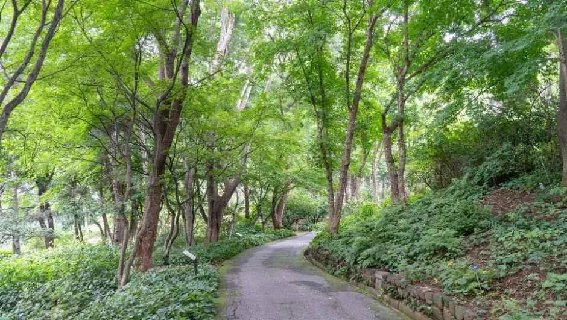
▲ 동원의 완만한 산책로. 촬영 시기는 자료에 없고 잎이 푸른 모습이라 겨울 풍경은 아니다. ⓒ 한국관광공사 · 공공누리 제1유형 · 하단 로고 크롭
2. 운영시간 — 일몰까지 열지만 표를 파는 시간은 더 이르다
공식 누리집은 관람 시간을 09:00~일몰 시, 매표 시간을 09:00~17:00로 안내하고 계절에 따라 변동될 수 있다고 덧붙인다. 한국관광공사 정보도 같은 내용이다. 겨울에는 해가 일찍 지므로 실제로 걸을 수 있는 시간은 이보다 훨씬 짧아진다. 공식 관람안내 바로가기
일몰 시각은 한국천문연구원의 월별 해·달 출몰시각에서 지역별로 확인할 수 있다. 한국천문연구원 출몰시각 바로가기 정원 전체를 도는 데 걸리는 시간은 공식 안내가 없어 확인하지 못했다.
| 항목 | 내용 |
|---|---|
| 관람 시간 | 09:00 ~ 일몰 시 |
| 매표 시간 | 09:00 ~ 17:00 (계절에 따라 변동, 문의 031-333-3558) |
| 휴관일 | 연중무휴 |
| 유모차 | 한국관광공사 정보상 반입 가능 |
| 반려동물 | 반입 금지(장애인 보조견은 표지 부착·장애인 동반 시 입장 가능) |
표에서 관람 시간은 일몰까지지만 매표는 17:00에 끝난다. 계절에 따라 변동될 수 있다고 안내하므로, 겨울에 늦은 시간에 갈 계획이라면 문의 031-333-3558로 확인해 두는 편이 안전하다.
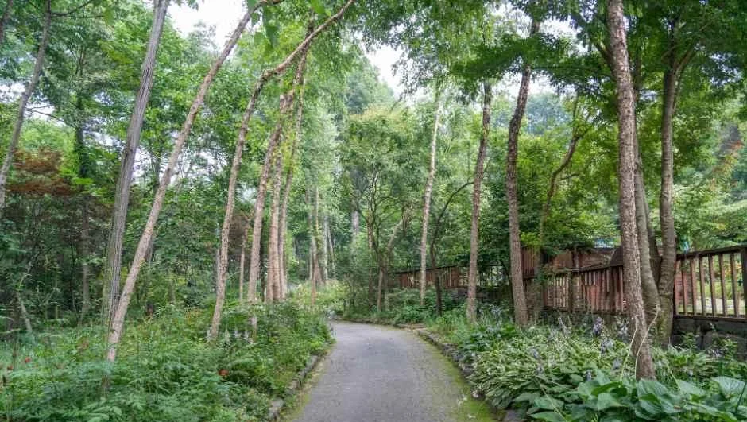
▲ 울타리를 따라 이어지는 정원길. 촬영 시기는 자료에 없다. ⓒ 한국관광공사 · 공공누리 제1유형 · 하단 로고 크롭
3. 겨울 요금 — 동절기 성인 6,000원, 단 할인은 중복되지 않는다
한택식물원 누리집에는 동절기 요금표와 정규 요금표가 따로 있다. 동절기에는 어른 6,000원, 청소년·경로·국가유공자·인근 면민 5,000원, 어린이 4,000원이다. 같은 페이지에는 동절기 요금을 적용하면 지역 할인과 단체 할인은 적용되지 않는다고 적혀 있다.
문제는 동절기가 언제인지다. 누리집 관람 안내와 한국관광공사 정보 어디에도 동절기 시작일과 종료일은 없었다. 지금 10월 하순에 어느 요금이 적용되는지, 단풍 페스티벌 기간에도 같은지는 확인하지 못했으니 전화로 물어보는 편이 확실하다. 2026-10-21에 공지사항 목록(최근 게시 2026-10-16 이후)과 관람·요금 페이지, 이용·편의시설 페이지를 다시 확인했지만 동절기 적용일을 밝힌 공지는 없었다. 용인시 관광포털의 2026-01-27 포토갤러리 글도 동절기 요금(어른 6,000원, 청소년·경로 5,000원, 어린이 4,000원)과 정규 요금을 함께 소개할 뿐 시작일은 적지 않았다.
| 구분 | 성인(어른) | 어린이·청소년 등 |
|---|---|---|
| 동절기 요금 | 6,000원 | 청소년·경로·국가유공자·인근면민 5,000원 / 어린이 4,000원 |
| 정규 요금(개인) | 10,000원 | 어린이·청소년 7,000원 |
| 단체(30명 이상)·용인시민 | 8,000원 | 6,000원 |
| 경로·국가유공자·장애인·인근면민 | 7,000원 | 6,000원 |
어린이·청소년은 만 36개월 이상부터 고등학생까지다. 용인시민 할인은 신분증을 보여 주면 1인 1매로 적용된다. 경로우대는 만 65세 이상이고, 장애인은 1~3급이면 본인과 동반보호자 1인, 4급 이상은 본인이 대상이다. 인근 면민은 용인시 백암면·원삼면, 안성시 삼죽면·죽산면 주민이다.
무료입장은 백암면 옥산리 주민(신분증), 기초생활수급 1종 대상자(서류), 36개월 미만 어린이(단체 제외)다. 연간회원은 일반 100,000원(본인 외 동반 1인 무료), 가족 120,000원, 평생 1,000,000원이고 이용 횟수 제한이 없다. 연간회원 안내 바로가기
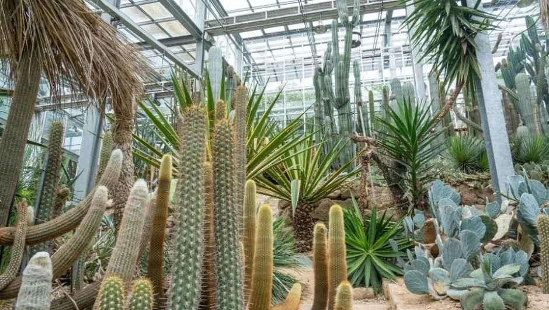
▲ 유리온실 안 선인장·다육식물 구역. 어느 온실인지와 촬영 시기는 자료에 없다. ⓒ 한국관광공사 · 공공누리 제1유형 · 하단 로고 크롭
4. 겨울에 무엇을 볼 수 있나 — 확인된 것과 확인하지 못한 것
누리집이 소개하는 시설 중 겨울에 의미가 큰 곳은 유리온실이다. 주제원 목록에는 호주온실, 중남미온실, 난대식물보전온실이 있고 현황 페이지는 전시용 유리온실이 3동이라고 적는다. 용인시 관광포털은 2026-01-27 글에서 추운 겨울에도 따뜻한 온실에서 바오밥나무와 선인장을 볼 수 있다고 소개한다. 겨울에도 온실 관람이 가능하다는 시 안내이지만, 동별 개방 시간과 휴관 조건은 공식 안내에 따로 없어 확인하지 못했다.
실외 정원은 구성이 다양하다. 주제원 소개에는 자연생태원, 침엽수원, 억새원, 구상나무산림욕장, 백송길, 산수유길 같은 곳이 이름을 올렸다. 주제원 소개 페이지에는 번호 정원과 별도로 백송길·매화길·목련길·산수유길·구상나무산림욕장·거울정원이 길 형태로 나열돼 있다. 겨울에 이 중 어느 곳이 볼 만한지는 공식 자료에 평가가 없어 단정하지 않는다. 이 글에 쓴 식물원 사진은 모두 잎이 있는 계절에 찍은 것으로 보여 겨울 풍경은 직접 보여 주지 못한다.
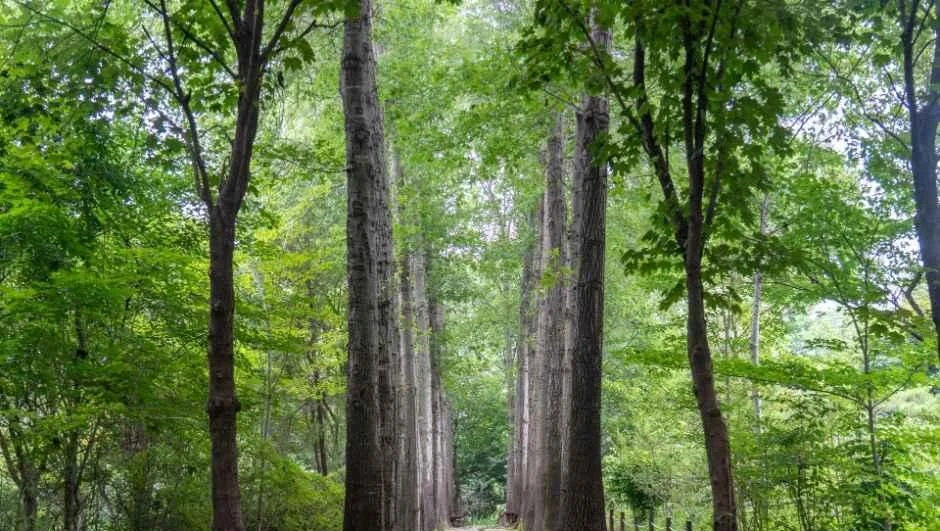
▲ 나무가 줄지어 선 숲길. 촬영 시기는 자료에 없고 잎이 푸른 모습이다. ⓒ 한국관광공사 · 공공누리 제1유형 · 하단 로고 크롭
💡 시설 이용 — 동절기에는 식당이 닫는다
가든센터 1층에는 식당·카페(80석), 기념품샵, 식물판매장이 있다. 식당은 돈가스·제육덮밥 등 간단한 식사를 파는 곳인데, 누리집은 동절기에는 식당을 운영하지 않는다고 밝힌다. 카페 운영 여부는 따로 적혀 있지 않다. 식물원 안에서는 취사가 금지이고, 음식은 국물 없는 도시락·껍질 깐 과일·음료수만 허용된다.
2026년 10월 19일부터 11월 8일까지는 단풍 페스티벌이 열리고, 같은 기간 매주 토요일 14:00~16:00에 식물해설 프로그램이 진행된다. 회차별 20명 선착순이며 구글폼 사전 신청과 현장 신청이 모두 가능하다. 해설은 무료이지만 입장료는 별도다. 단풍 페스티벌 공지 바로가기
1층 전시실에서는 9월 1일부터 10월 31일(토)까지 보태니컬아트 협력전이 열리며 관람 시간은 09:00~17:00다. 이 전시는 이달 말까지라 겨울 방문과는 겹치지 않는다. 한택식물원은 2026년 3월 공지에서 산림청 지정 '2026년에 꼭 가봐야 할 수목원 10선'에 선정됐다고 밝혔다. 선정 사실은 식물원 공지 기준이며 산림청 원문은 확인하지 못했다.
5. 가는 길과 주차 — 대중교통은 시간표부터
한택식물원 누리집은 영동고속도로 양지IC에서 17번 국도(백암·진천 방향)로 약 10km, 근곡사거리에서 백암면 방향으로 우회전해 면내를 지난 뒤 325번 국도 장평리 방향으로 좌회전해 약 10km를 가는 길을 안내한다. 총 거리 21km, 소요 30분이라고 적고 있다. 공식 오시는 길 바로가기
| 이용 도로 | 거리 | 소요 시간 |
|---|---|---|
| 영동고속도로 양지IC | 21km | 약 30분 |
| 중부고속도로 일죽IC | 8km | 약 10분 |
| 경부고속도로 안성IC | 34km | 약 30분 |
중부고속도로 일죽IC에서는 38번 국도로 안내되며, 누리집은 죽산면 면내길이 좁아 38번 국도를 이용하라고 당부한다. 대중교통은 수원(10번 버스)·남부터미널에서 백암터미널이나 용인터미널로 간 뒤 10-4번 버스를 타는 방식이 안내돼 있고, 남부터미널·동서울터미널에서 죽산터미널로 가 택시를 타는 방법도 소개된다. 용인에서 백암까지 약 30분, 백암에서 식물원까지 약 15분이 걸린다. 누리집 시간표는 버스 회사 사정으로 바뀔 수 있다고 쓰여 있어, 막차 시각은 실시간 버스 정보에서 따로 확인해야 한다.
주차는 한국관광공사 정보에 '가능'으로만 적혀 있다. 주차 요금과 주차면 수, 겨울철 눈이 올 때의 진입로 통제 기준은 공식 자료에서 확인하지 못했다. 겨울 산간 도로 운전이 걱정이라면 11월 산간 도로 결빙 대비 기사를 함께 보자.
6. 같이 묶을 곳 — 식물원 누리집이 소개한 인근 명소
공식 누리집의 주변관광 페이지는 식물원 인근의 용인·안성 명소를 나열한다. 안성 죽산면의 죽주산성, 칠장사, 용인 원삼면의 용인농촌테마파크, 처인구 해곡동의 와우정사 등이다. 아래 사진은 식물원이 아니라 이 인근 명소에서 찍은 것이다. 각 시설의 겨울 운영시간은 확인하지 못했으니 방문 전 확인이 필요하다.
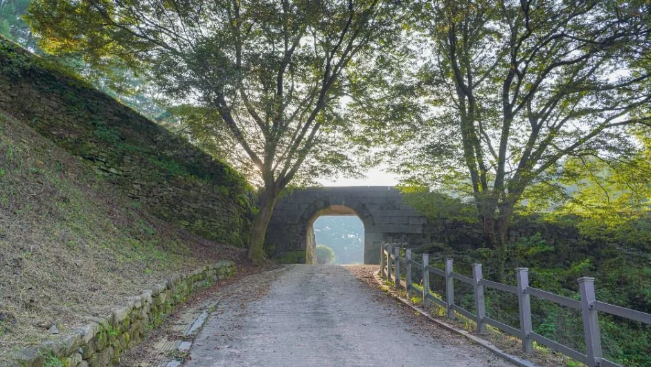
▲ 안성 죽주산성(인근, 죽산면 죽양대로 111-71)의 성벽 길. 촬영 시기는 자료에 없다. ⓒ 한국관광공사 · 공공누리 제1유형 · 하단 로고 크롭
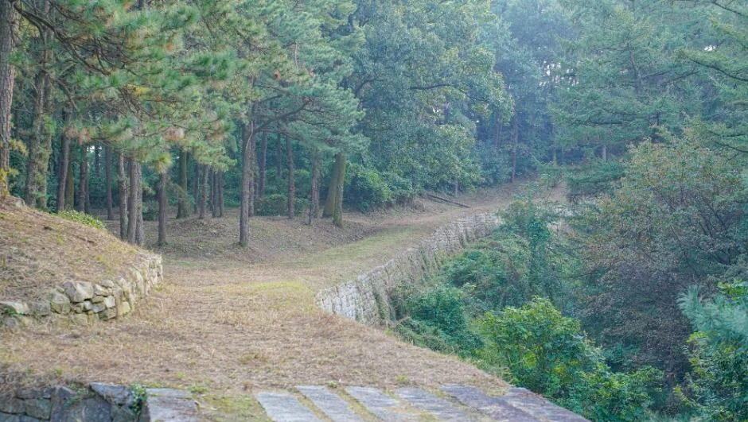
▲ 죽주산성(인근)의 성곽 구간. 촬영 시기는 자료에 없다. ⓒ 한국관광공사 · 공공누리 제1유형 · 하단 로고 크롭
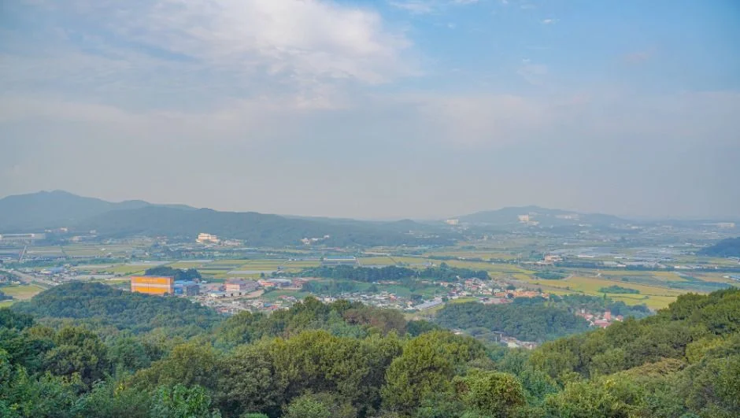
▲ 죽주산성에서 내려다본 일대 풍경(인근). 촬영 시기는 자료에 없다. ⓒ 한국관광공사 · 공공누리 제1유형 · 하단 로고 크롭
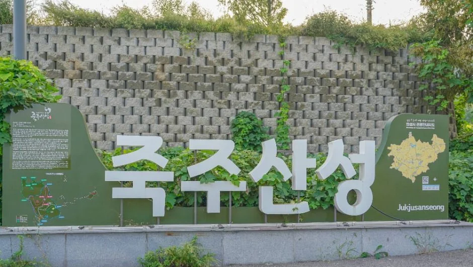
▲ 죽주산성(인근) 입구의 안내 조형물. 촬영 시기는 자료에 없다. ⓒ 한국관광공사 · 공공누리 제1유형 · 하단 로고 크롭
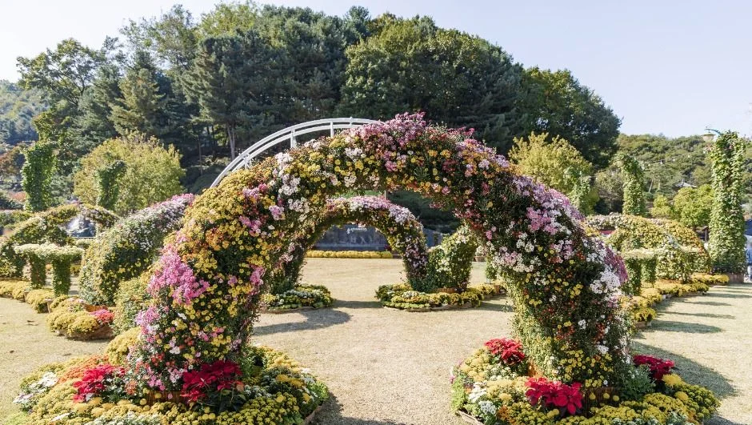
▲ 용인농촌테마파크(인근, 처인구 원삼면 농촌파크로 80-1)의 꽃 장식. 가을 국화 시기로 보이며 겨울 모습은 아니다. ⓒ 한국관광공사 · 공공누리 제1유형 · 하단 로고 크롭
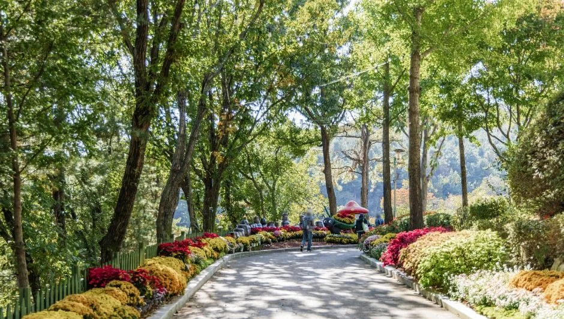
▲ 용인농촌테마파크(인근)의 화단 산책로. 촬영 시기는 자료에 없다. ⓒ 한국관광공사 · 공공누리 제1유형 · 하단 로고 크롭
누리집 주변관광 목록에는 와우정사와 용인 대장금파크도 올라 있다. 와우정사는 처인구 해곡동 연화산 자락에 있고 누워 있는 석가모니불상은 기네스북에 오른 세계 최대 목불상이라고 안내된다(한국관광공사 주소는 해곡로 25-15). 대장금파크는 한택식물원과 같은 백암면에 있는 영상문화단지로 누리집에는 용천로 330, 한국관광공사 정보에는 용천드라마길 25로 주소가 서로 다르게 적혀 있다. 두 곳 모두 겨울 운영시간과 요금은 확인하지 못했으니 방문 전 확인이 필요하다. 아래 사진은 식물원이 아니라 이 인근 시설이고 모두 잎이 있는 계절의 모습이다.
▲ 와우정사(인근)의 불두. 촬영 시기는 자료에 없고 푸른 하늘이 보인다. ⓒ 한국관광공사 · 공공누리 제1유형 · 하단 로고 크롭
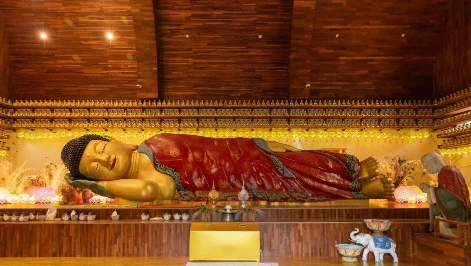
▲ 와우정사(인근)의 와불. 촬영 시기는 자료에 없다. ⓒ 한국관광공사 · 공공누리 제1유형 · 하단 로고 크롭
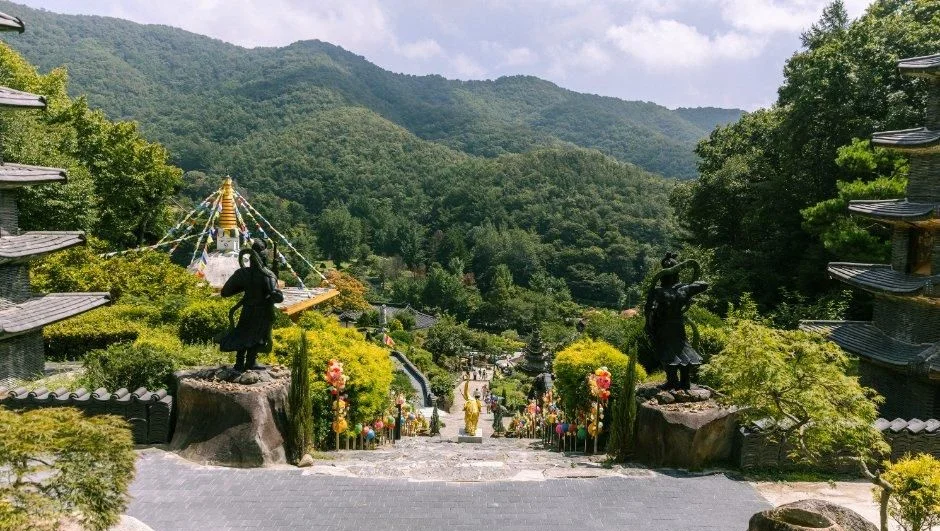
▲ 와우정사(인근) 경내 전경. 잎이 푸른 모습이라 겨울 풍경은 아니다. ⓒ 한국관광공사 · 공공누리 제1유형 · 하단 로고 크롭
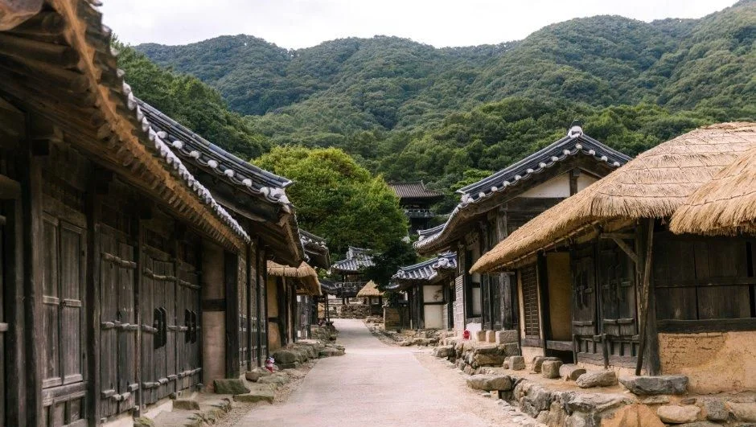
▲ 용인 대장금파크(인근, 백암면) 외부의 전통 가옥 거리. 촬영 시기는 자료에 없고 잎이 푸른 모습이다. ⓒ 한국관광공사 · 공공누리 제1유형 · 하단 로고 크롭
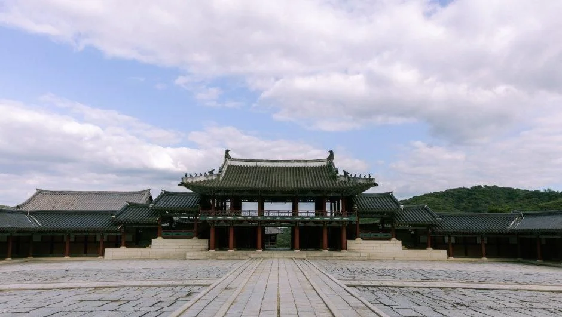
▲ 용인 대장금파크(인근)의 궁궐 세트 마당. 촬영 시기는 자료에 없다. ⓒ 한국관광공사 · 공공누리 제1유형 · 하단 로고 크롭
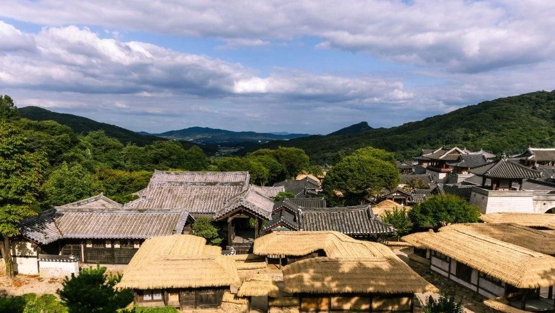
▲ 용인 대장금파크(인근) 세트장 전경. 촬영 시기는 자료에 없고 여름 구름이 보인다. ⓒ 한국관광공사 · 공공누리 제1유형 · 하단 로고 크롭
가을 단풍 사진은 식물원 안이 아니라 같은 권역의 인근 사찰에서 확보한 것이다. 한택식물원 단풍 사진은 한국관광공사·Wikimedia Commons에서 쓸 수 있는 것이 없었다.
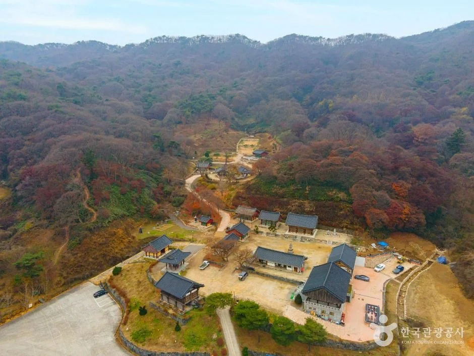
▲ 안성 칠장사(인근, 죽산면) 일대를 위에서 본 모습. 붉은빛으로 물든 산자락이 보이며 촬영 연도는 자료에 없다. 한택식물원 사진이 아니다. ⓒ 한국관광공사 · 공공누리 제3유형(변경금지)
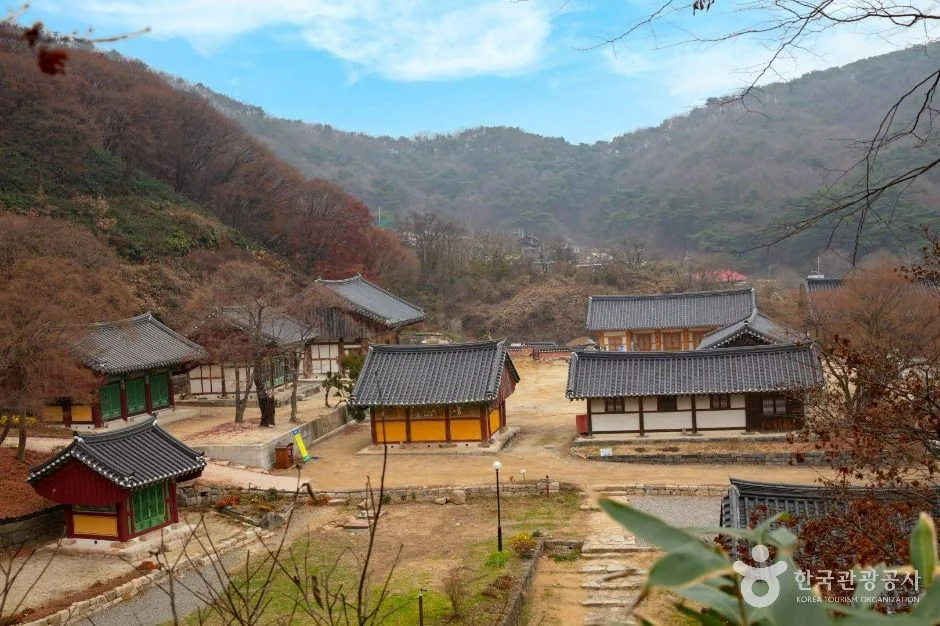
▲ 칠장사(인근) 경내와 낙엽색이 번진 산자락. 촬영 연도는 자료에 없다. ⓒ 한국관광공사 · 공공누리 제3유형(변경금지)
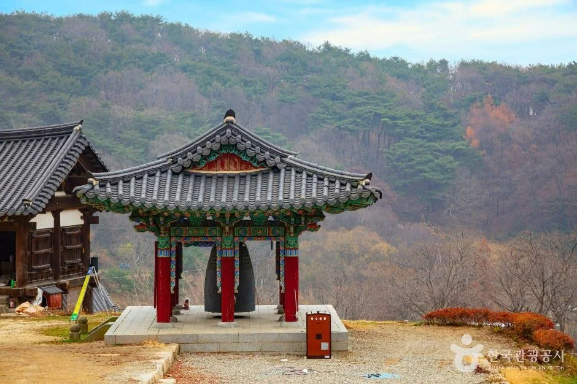
▲ 칠장사(인근) 종각. 주황·갈색 잎이 보이는 늦가을 분위기이나 정확한 촬영일은 자료에 없다. ⓒ 한국관광공사 · 공공누리 제3유형(변경금지)
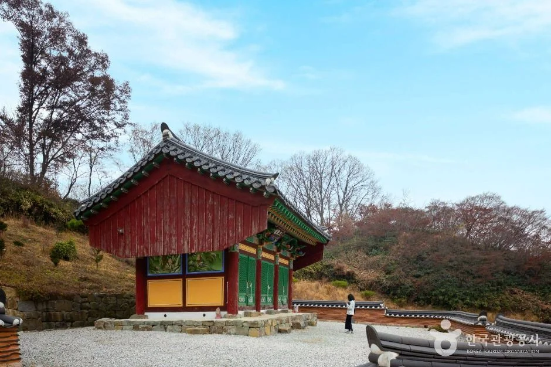
▲ 칠장사(인근)의 전각과 잎이 거의 진 나무. 촬영 연도는 자료에 없다. ⓒ 한국관광공사 · 공공누리 제3유형(변경금지)
한택식물원을 다녀온 뒤 다른 식물원과 비교해 보고 싶다면 가평 아침고요수목원, 광주 화담숲 예약 가이드, 양평 세미원·두물머리 기사를 참고할 수 있다. 세 곳은 운영 방식과 요금이 서로 다르니 각 기사의 기준일을 확인하자.
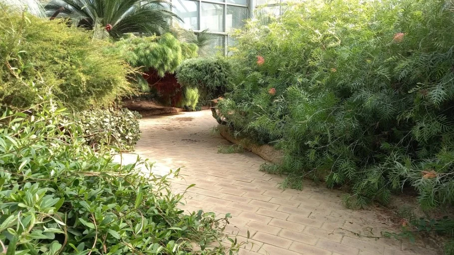
▲ 한택식물원 내부 정원길. 2021-10-24 촬영, 위키미디어 커먼즈. JKD, CC BY 4.0
7. 관람 유의사항 — 삼각대와 돗자리는 반입이 안 된다
누리집의 관람 유의사항은 관람 구역 밖 출입 금지, 전 지역 금연·금주, 취사 금지를 먼저 적는다. 반입 금지 품목은 식물 채취 도구, 음식물(소포장 개인용 제외), 카메라 삼각대·외다리, 돗자리(유치원·어린이집 단체의 1인용 돗자리 제외), 인화성 물질, 반려동물, 놀이·운동기구, 음향기구와 악기다.
사진을 찍으러 가는 사람에게는 삼각대 반입 금지가 걸린다. 식물원은 2026년 9월 14일 '사진 및 동영상 촬영에 대한 지침'을 공지로 올렸다. 첨부 PDF에 따르면 식물원 관리 영역에서 촬영하려는 사람은 촬영 5일 전까지 허가신청서를 내 원장의 허가를 받아야 하지만, 관람객이 기념 목적으로 찍는 경우는 해당하지 않는다.
국가·공공단체 외의 상업 촬영은 촬영 장소 사용료를 내야 하고(드라마·영화·CF 등은 인원에 따라 1~9명 50만 원부터 51명 이상 300만 원까지, 부가세 별도), 1인 미디어(개인방송 등)는 사전 협의 대상이다.
제한구역·비개방 지역 촬영은 원칙적으로 허가하지 않는다. 다만 일반 관람객의 삼각대 반입은 관람 유의사항상 별도로 금지돼 있어 개인 촬영도 삼각대는 가져갈 수 없다.
✅ 출발 전 체크
1) 소재지는 광주 퇴촌이 아니라 용인시 처인구 백암면 한택로 2 2) 관람 09:00~일몰, 매표 09:00~17:00, 연중무휴 3) 동절기 요금 성인 6,000원이나 적용 기간은 공식 미표기(2026-10-21 재확인), 전화 확인 4) 식당은 동절기 미운영, 음식은 국물 없는 것만 반입 5) 삼각대·돗자리·반려동물 반입 금지 6) 주차 요금·온실 겨울 개방은 확인하지 못함
8. 정리
한택식물원은 광주 퇴촌이 아니라 용인시 처인구 백암면에 있고, 09:00부터 일몰까지 연중무휴로 열며 동절기에는 성인 6,000원 요금이 따로 적용된다. 정규 요금은 성인 10,000원, 어린이·청소년 7,000원이다. 동절기에는 식당이 문을 닫고 지역·단체 할인도 적용되지 않는다.
동절기가 언제부터인지, 겨울철 온실 개방 시간, 주차 요금과 주차면 수, 상업 촬영 허가 세부 조건 외의 촬영 규정은 확인하지 못했다. 이 기사는 2026년 10월 21일 기준이므로 방문 전 한택식물원(031-333-3558)에 확인하자.